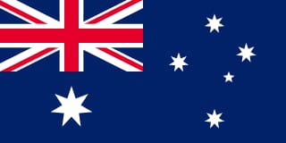
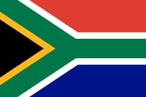
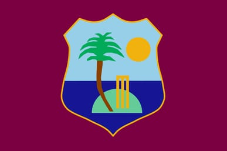

TEAMS NAME
INDIA

The India men's national cricket team, also known as Team India and Men in Blue, is governed by the Board of Control for Cricket in India, and is a Full Member of the International Cricket Council.
AUSTRALIA
Cricket Australia, formerly known as the Australian Cricket Board, is the governing body for professional and amateur cricket in Australia.
NEW ZEALAND
The New Zealand A cricket team is a cricket team representing New Zealand, and is the second tier of international New Zealand cricket below the full New Zealand cricket team
PAKISTAN
The team is a Full Member of the International Cricket Council, and participates in Test, One Day International (ODI) and Twenty20 International cricket matches.
AFGHANISTAN
The Afghanistan men's national team represents Afghanistan in international cricket. Cricket has been played in Afghanistan since the mid-19th century.
BANGLADESH
The Bangladesh National Cricket team nicknamed The Tigers produced by the BCB or Bangladesh Cricket Board.
ENGLAND
Cricket is one of the most popular sports in England, and has been played since the 16th century. Marylebone Cricket Club, based at Lord's, developed the modern rules of play and conduct.
SOUTH AFRICA
The South African national cricket team, nicknamed the Proteas, represent South Africa in international cricket.
SRILANKA
Sri Lanka has an International cricket team known as The Sri Lanka Cricket Team, nicknamed as The Lions.
WEST INDIES
Cricket West Indies (CWI), formerly known as West Indies Cricket Board (WICB), is the governing body for cricket in the West Indies.